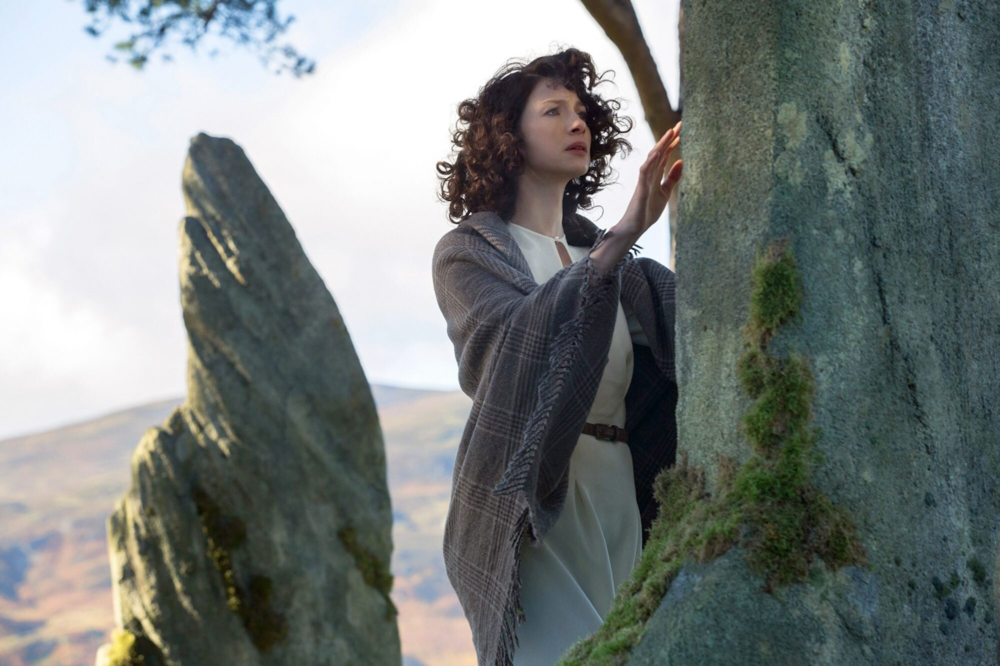
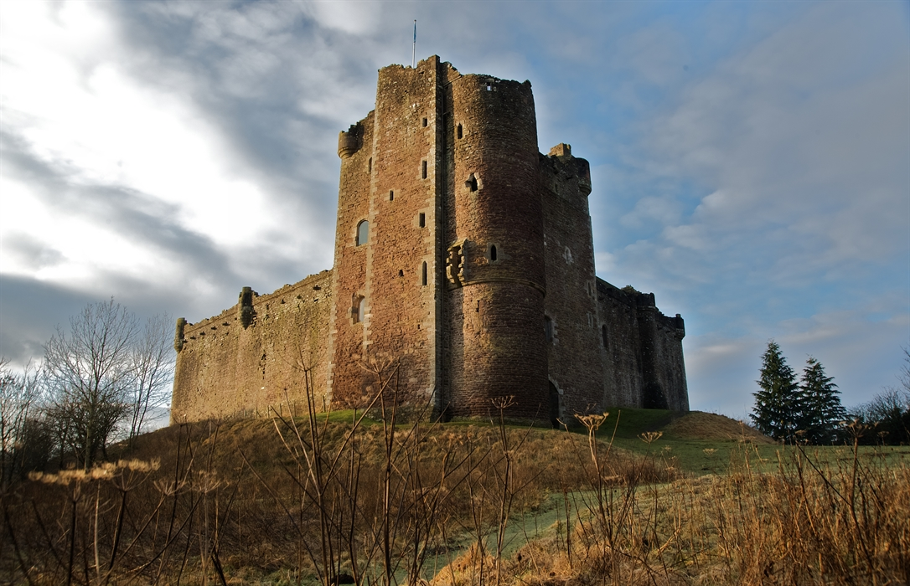
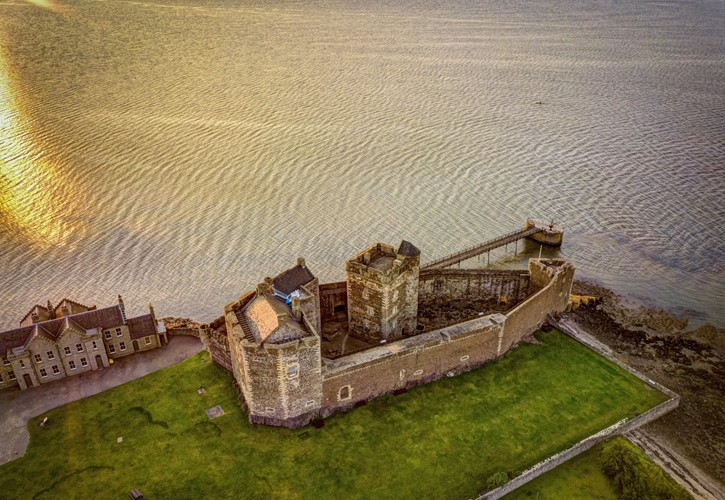
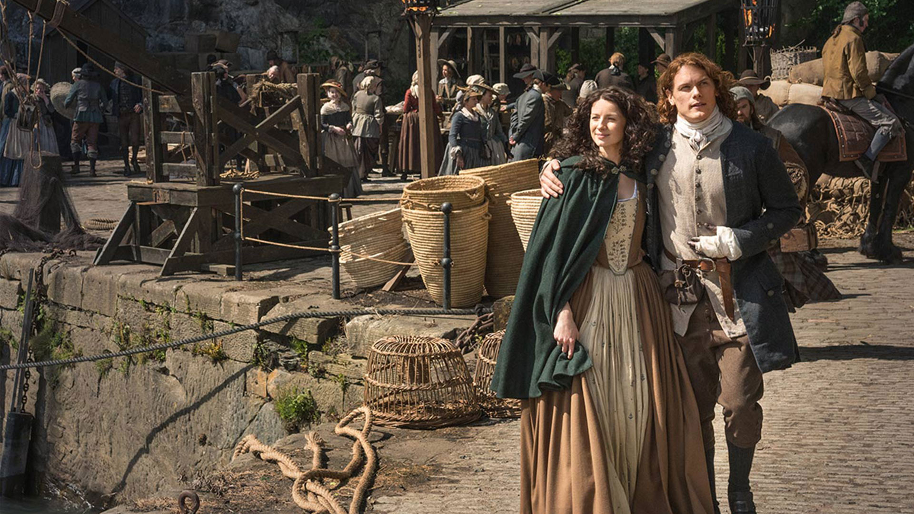
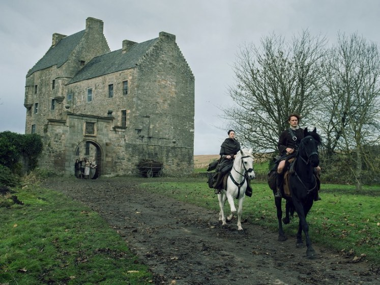

"Prazer, eu sou Murtagh Fitzgibbons Fraser, padrinho do Jamie e irei te acompanhar nesta viagem. É claro que só poderíamos começar pelas pedras de Craigh Na Dun onde a Sassenach, digo a Claire apareceu pela primeira vez. As pedras das nossas cenas na verdade são de isopor, isto mesmo, não são pedras reais! Callanish Stones é o nome real que serve de inspiração para o círculo de pedras que é o lugar mais icônico da série, onde ocorrem as viagens no tempo. A formação original do lugar é em forma de cruz e há muito mistério sobre a origem das pedras, eu o convido a visitar e tentar desvendar o mistério por si mesmo!"
Horário de funcionamento: O dia inteiro, local aberto
Ingresso: visita gratuita
Tel: +44 (1851) 621422 e-mail: hello@calanais.org
"É a casa de Colum Mackenzie, tio do Jamie e seu clã. É um local muito marcante, pois Claire o visita com o marido na década de 70 quando estão viajando e retorna pra lá na década de 40 após a viagem no tempo. Uma curiosidades para você meu caro viajante, é que o vilarejo onde se encontra o castelo sempre foi famoso pela fabricação de pistolas e alguns exemplares podem ser vistos no Museu Nacional da Escócia. É um passeio que vale muito a pena, não esqueça sua máquina mágica, que tira fotos, como eu queria ter tido uma dessa no meu tempo...
Horário de funcionamento: Diariamente das 10h às 16h, necessário agendamento da visita
Ingresso: £9 para adultos e £5.40 para crianças
Tel: +44 (1786) 841742 E-mail: customer@hes.scot
"A prisão que foi um lugar de grande sofrimento para o meu querido Jamie que sofreu nas mãos de Black Jack as chibatadas que deixarão marcas por toda a sua vida. Também na Escócia é na verdade para você, caro viajante, um castelo do século 15 com vista para o rio Forth, seu nome Blackness. Uma ex-fortaleza de artilharia também conhecido como o navio que nunca navegou devido ao formato de sua estrutura. Na minha época viajámos a cavalo, mas nos seus dias há um ônibus de Edimburgo para o local. Os ingressos custam £6 para adultos e £3.60 para crianças."
Horário de funcionamento: Diariamente das 10h às 16h exceto sextas e sábados, recomenda-se agendamento prévio para garantir a entrada
Ingresso: £6 para adultos e £3.6 para crianças
Tel: +44 (1506) 834807 E-mail: customer@hes.scot
"Hoje é um museu a céu aberto em Newtonmore chamado Highland Folk Museum, com as típicas casas das Highland com telhado de relva tradicional, um lugar perfeito para os mackenzi. Elas são mostradas em várias cenas do século 18 na série.
Horário de funcionamento: Diariamente das 10h30 às 16h exceto segundas e terças
Ingresso: Verificar o site oficial, pois os valores variam de acordo com o período da viagem
Tel: +44 (0)1349 781650 E-mail: highland.folk@highlifehighland.com
"Também conhecido como Broch Tuarach sempre foi o lar de Jamie e sua família, Claire chegou a conhecer o castelo, em seu tempo é uma casa com torre do século 16 arruinada, perto de Edimburgo. Se você visitar, por favor não entre dentro viajante! O interior é abandonado e não é totalmente seguro. Apenas admire à distância pois assim será mais seguro."
Local aberto ao público, ao ar livre
Cuidado ao visitar o local, pois é abandonado e não é totalmente seguro para entrar, admirar apenas de fora.
Apesar de ser o último ponto de nosso passeio, ainda há muitos outros lugares lindos na Escócia para conhecer, não deixe de visitar o site Visit Scotland - Outlander que possui mapa com mais pontos turísticos e até áudios para uma visitação guiada."